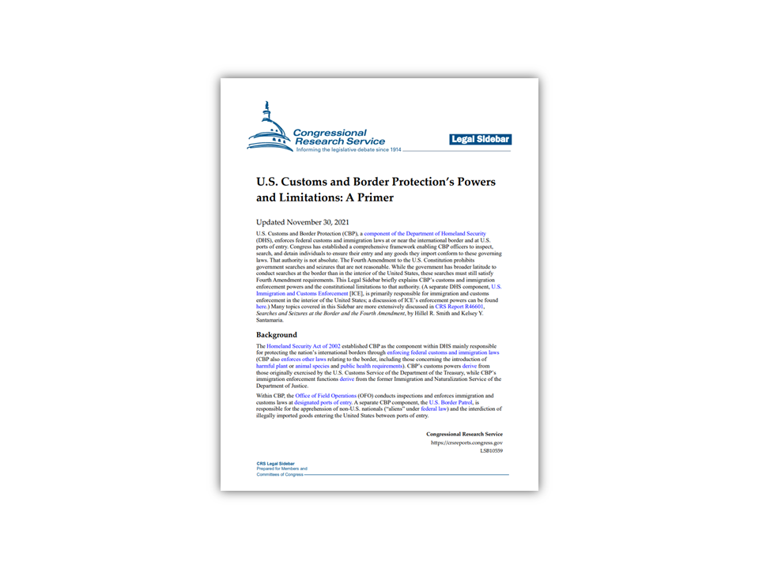

NATIONAL SECURITY
Nine months into fiscal year 2022, US Border Patrol has already apprehended 1,653,770 million migrants, nearly as many as last year's record high.
August 7, 2022
Pair of migrant families from Brazil pass through a gap in the border wall to reach the US in Yuma, Arizona on June 10, 2021. Eugene Garcia | AP file | NBC News
Arrests of migrants illegally crossing the Southwest border will surpass last year’s record of 1.682 million. According to the latest official statistics from the Department of Homeland Security, US Border Patrol has already apprehended 1,653,770 million migrants over the first nine months of fiscal year 2022. At this unprecedented rate, 2022 will almost certainly exceed 2 million arrests before the fiscal year ends in September.
GO DEEPER
The Congressional Research Service explains CBP’s powers and limitations PDF
GO DEEPER
Listen to NPR (2:35/3:41) compare last year's record with 2000
GO DEEPER
Watch Secretary Alejandro N. Mayorkas and US Border Patrol Chief Raul Ortiz discuss their trip to the border earlier this year (Feb 11, 2022)